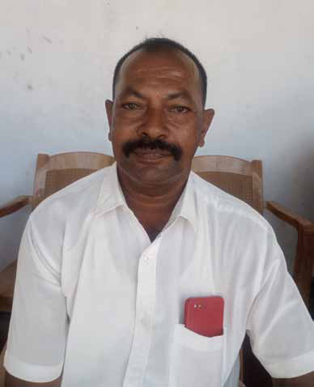
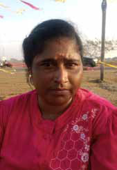

They Killed My cousin
They Killed My cousin
Jaffna Monitor hellojaffnamonitor@gmail.com 34 M y name is Selvanayagam Yoganathan, previously known as Pandiyan during my time with the Liberation Tigers of Tamil Eelam (LTTE). I am closely related to Robert, a distinguished commander within the LTTE's Eastern Province, renowned for his strategic role in the Elephant Pass army camp assault. Robert, my cousin, is the son of my father's younger sister. In his role with the LTTE, Robert served as the deputy military leader of the Eastern Province, acting as the second-in-command to Karuna Amman. When Karuna chose to part ways with the LTTE, citing the need to address the neglected issues of the Eastern regions, Robert aligned with him, prioritizing the welfare of the Eastern Province. However, seeking to avoid a fraternal conflict, he relocated to Colombo to escape the conflict triggered by the Vanni Tigers' aggressive incursion into the Eastern territories. While in Colombo, Robert was approached by military personnel. As a dedicated member of the LTTE, he sought to avoid any interactions with the army and decided to return to Batticaloa. Upon his return, he reached out to Ramanan and Keerthi, leaders of the LTTE's intelligence wing in Batticaloa, to secure assurances of safety. They promised him protection on the condition that he remain uninvolved in ongoing conflicts. Accompanied by Thurai, a relative and the then-head of the LTTE's political wing in the Batticaloa district during Karuna Amman’s leadership, Robert moved to Kollunulai, a small fishing village in the Eastern district, where he led a peaceful, ordinary life. However, their peaceful existence was abruptly disrupted when they were summoned to meet Keerthi, the head of the LTTE's Batticaloa district intelligence wing, and they never returned. Subsequently, I learned of the tragic fate that befell Robert and other prominent Eastern LTTE commanders such as Jimkely Thatha, Vasu, and 15 others. They were ruthlessly They Killed My cousin Selvanayagam Yoganathan

Jaffna Monitor hellojaffnamonitor@gmail.com 35 burned to death by the Vanni Tigers at Panchimarathadi. This barbaric act was ordered by Ramesh, who, served as the LTTE's military head of Batticaloa and Ampara districts at the time. The irony lies in the fact that Ramesh was Robert's cousin. Later, I discovered that they were burned to death by an LTTE guard named Raguvaran, who still resides and owns a bakery in Kottiyavalai. Initially, the LTTE leadership pinned the blame on Ramesh. However, as a member of the LTTE, I understood that Ramesh couldn't have acted alone. The command must have originated from higher echelons, likely stemming from Prabhakaran and transmitted through the LTTE's intelligence wing head, Pottu Amman. Later, as the Eastern LTTE fighters rallied and struck back against the Vanni Tigers, they captured a Vanni combatant who had been a witness to the horrific events at Panchimarathadi. He revealed that Robert confronted his impending death with remarkable bravery, boldly asking Ramesh to shoot him in the chest so he could meet his end like a warrior. Robert even prophesized Ramesh's own destiny in a chilling forewarning, telling him, \,Jf;nfy;yhk; eP gjpy; nrhy;Ytha;" ("you will have to answer for this"). True to Robert's words, Ramesh met his demise at the hands of the Sri Lankan army, surrendering without resorting to cyanide like a coward. Witnessing this, I began to believe in karma. name is Kanthasamy Ranjithamalar. My brothers, Prabha (also known by his nom de guerre, Lavamohan in the LTTE) and Thavarasa (known within the LTTE as Pikki), were drawn into the ranks of the LTTE at a tender age, fueled by a fervent yearning for liberation. Following the schism orchestrated by Karuna Amman, my brothers tragically fell to the Vanni Tigers. One was cruelly snatched from our lives in Vellikantai, and the other suffered a similar fate in Pentukalcenai. Once part of a vibrant family of five siblings, I now mourn the loss of both my brothers. Their violent deaths have etched a permanent scar on my soul. At times, the wish that fate might have spared just one of them haunts me, longing for a chance to preserve some semblance of our family’s legacy. The agony of their absence is a relentless burden that shadows our daily lives. In the wake of their demise, our family was thrust into overwhelming adversity. With our parents already passed, the mantle of responsibility descended upon me. To this day, haunting questions of justice and fairness gnaw at me—why were my brothers, barely more than children at 17 and 19, brutally ripped from our lives? The gaping void left by their untimely departure is a wound in my heart that time refuses to heal. They Took My Brothers Away By: Our Reporter Kanthasamy Ranjithamalar
